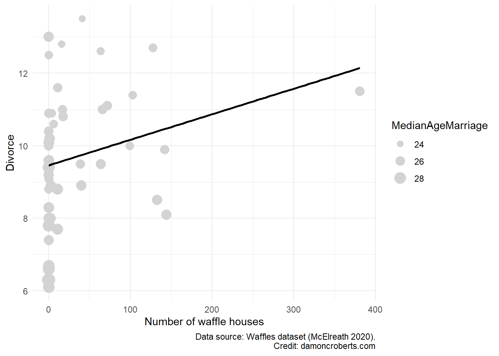

15 🤓 Multivariate regression
In the previous couple of exercises we have examined relationships between variables. In the last exercise, we addressed a particular type of relationship that is often of interest to scientists: a causal relationship. A causal relationship not only says that two variables are related to one another, but that one variable causes the other variable. That is, a causal relationship argues that there is a structure to that relationship, whereas a correlational relationship is agnostic about the structure of such relationship and only suggests that there is a relationship.
In the last exercise, we examined bivariate causal relationships through a regression. Recall that a regression examines causal relationships by forcing us, the researchers, to specify a structure to that relationship.
In the example before, we used the lm() function (R Core Team 2021) to fit a bivariate regression model that examined the hypothesized relationship presented in Figure 15.1.
%%{init: {'theme':'base', 'themeVariables':{'primaryColor':'#ffffff', 'primaryBorderColor': '#000000'}}}%%
graph LR
A[Waffle Houses] --> B[Divorce]
The mathy way that we examined this relationship is by finding \(\beta\) and \(\alpha\) based on our data.
\[ \text{Divorce rate} = \beta \times \text{Waffle houses} + \alpha \]
- Dependent variable: The variable that is being explained by another variable. It is the variable that depends on another variable.
- Independent variable: The predictor or explanatory variable. It is the variable explaining the other variable. We are assuming that it is not dependent on some other variable itself (what we will cover here in a second).
- \(\beta\): The slope. This is the effect that Waffle houses has on divorce rate.
- \(\alpha\): The intercept. This is the parts of divorce that is not explained by \(\beta \times \text{Waffle houses}\). This includes any randomness inherent to the world along with other systematic things that is not explained by waffle houses.
- residual: Recall back to our visual of the scatter plot with the line of best fit through it. The residual is the difference between the
predictedvalue provided by the line and theobservedvalue provided by our data. The larger our residual, the less accurate our prediction is for that particular data point. - standard error: The standard error just reflects what we’d get if we calculated the standard deviation of our residuals.
In R (R Core Team 2021), we defined this same process by writing this code:
lm( # specify a linear model
formula = Divorce ~ WaffleHouses, # divorce is explained by WaffleHouses
data = waffles # we got these data from the waffles dataset
)In the “recall” block above, I made a quite interesting statement when providing a short definition for the independent variable. I said that “we are assuming that it is not dependent on some other variable itself”. This is an extremely important statement, though it may sound innocuous.
In the simple hypothesis I presented in Figure 15.1, I am arguing that Waffle Houses are explaining or predicting the rate of Divorce. However, I am not saying anything about whether Waffle Houses are also explained by something.
What does this mean to our regression we estimated with the code above? It means that I am asserting or assuming that Waffle Houses are the only thing causing Divorce. Divorces do not have an alternative explanation besides Waffle Houses nor does this imply that I think that Divorces are caused by Waffle Houses through some other means. Both of these are absurd statements. Of course, divorce is caused by something other than Waffle Houses and that Waffle Houses and divorce rates can be affected by something simultaneously.
To help you visualize this, let me provide a figure depicting these two points.
%%{init: {'theme':'base', 'themeVariables':{'primaryColor':'#ffffff', 'primaryBorderColor': '#000000'}}}%%
graph LR
A[Waffle Houses] --> B[Divorce]
C[Z] --> B
D[C] --> A
D --> B
The first situation that I described is reflected by the Z variable in Figure 15.3. Divorce has an alternative explanation coming from some other variable I will call Z. In this particular circumstance, Z is a truly alternative explanation to Divorce rates.
The second situation that I described is reflected by the C variable in Figure 15.3. C in this case is what we call a Confounding variable. We’ve already talked about these in the context of visually examining conditional bivariate relationships 1. A confounding variable, as is visually represented in Figure 15.3, explains both Waffle Houses and Divorce.
When we discussed this particular example in a previous exercise, the confounder I visually examined was the Median Age of Marriage.
%%{init: {'theme':'base', 'themeVariables':{'primaryColor':'#ffffff', 'primaryBorderColor': '#000000'}}}%%
graph LR
A[Waffle Houses] --> B[Divorce]
D[Median Age of Marriage] --> A
D --> B
Why did I choose this? Well, we can imagine that the MedianAgeMarriage may predict the presence of Waffle Houses (whether or not you are in the U.S. South, in a suburb, etc.). We can also imagine that people that are married younger are also more likely to be divorced.
So can we make a scatterplot with GGPlot2 (Wickham 2016) of this? Sure.
waffles %>% # grab my waffles dataset
ggplot( # I am going to make a plot with these data
data = ., # I already specified my dataset above so I can just use the dot as a shortcut
) +
geom_point( # specifically, I am going to make a scatterplot
aes(
x = WaffleHouses, # put this variable on my x-axis
y = Divorce, # put this variable on my y-axis
size = MedianAgeMarriage # change the size of the dots based on age of marriage variable
),
fill = "#D3D3D3", # fill the color of each dot with light grey
color = "#D3D3D3" # color the dots with light grey
) +
geom_smooth( # add a line of best fit to it
aes(
x = WaffleHouses, # this variable should be on the x-axis
y = Divorce # this variable should be on the y-axis
),
method = "lm", # specifically a straight line
color = "#000000", # make the line black
se = FALSE # do not include a visual representation of uncertainty
) +
theme_minimal() + # add the minimal theme
labs( # adjust the labels
x = "Number of waffle houses", # change x-axis label to this
y = "Divorce", # change y-axis labe lto this
caption = "Data source: Waffles dataset (McElreath 2020)." # add this as the caption to the plot
)
While we can still see a positive relationship between these two things, the line of best fit is only calculated using WaffleHouses and Divorce. We have to rely on our eyes to examine the relationship between the two once we account for age. That can be quite a challenge. Now imagine we think there are multiple confounding variables on top of MedianAgeMarriage. How would we depict that? I don’t know. This is one of the greatest challenges of data analysis - visuals are really powerful when they work, but once things start to get really complex, they can be misleading and really hard to understand.
Let’s use the lm() function (R Core Team 2021) we used before to calculate a regression but one that controls for our confounding variable MedianAgeMarriage. The code is actually not that much more complex!
lm( # going to calculate a regression with a straight line
formula = Divorce ~ WaffleHouses + MedianAgeMarriage, # keep what I had before, just add MedianAgeMarriage to my formula
data = waffles # using the waffles dataset
)
Call:
lm(formula = Divorce ~ WaffleHouses + MedianAgeMarriage, data = waffles)
Coefficients:
(Intercept) WaffleHouses MedianAgeMarriage
31.46226 0.00516 -0.84214 Like we did in the Bivariate regression exercise, I can make a table with these data with relative ease by using the modelsummary() function in the modelsummary package (Arel-Bundock 2022). What I’ll have to do instead is store the result of my lm() function (R Core Team 2021) into an object.
multivariate_regression <- lm( # calculate a regression with a straight line
formula = Divorce ~ WaffleHouses + MedianAgeMarriage, # keep what I had before, just add MedianAgeMarriage to my formula
data = waffles # using the waffles dataset
)
modelsummary( # make a table of results to a regression
multivariate_regression, # show the results of my multivariate_regression
notes = c(
"Data source: Waffles dataset (McElreath 2020).",
"Coefficient estimates from OLS.",
"Standard errors in parentheses" # add a note to tell people how this model was created and with what data.
),
stars = TRUE # print out the stars to show my p-values
)| (1) | |
|---|---|
| (Intercept) | 31.462*** |
| (4.391) | |
| WaffleHouses | 0.005 |
| (0.003) | |
| MedianAgeMarriage | −0.842*** |
| (0.168) | |
| Num.Obs. | 50 |
| R2 | 0.391 |
| R2 Adj. | 0.365 |
| AIC | 184.0 |
| BIC | 191.7 |
| Log.Lik. | −88.009 |
| RMSE | 1.41 |
| + p < 0.1, * p < 0.05, ** p < 0.01, *** p < 0.001 | |
| Data source: Waffles dataset (McElreath 2020). | |
| Coefficient estimates from OLS. | |
| Standard errors in parentheses |
Note, that instead of using modelsummary() from the modelsummary package (Arel-Bundock 2022), I could use stargazer() from the stargazer package (Hlavac 2022).
How would I interpret this table? The general template to follow is this:
For every one unit increase in [my independent variable], I observe a [\(\beta\) coefficient] unit [increase or decrease] in [my dependent variable]. The probability that the effect of [my independent variable] on [my dependent variable] would be this large or larger if the true effect were actually zero is [p-value]. It seems relatively [plausible/implausible] that the true effect is not actually zero.
So for this particular model, I would say: For every one more Waffle House in a state, I would expect a 0.005 increase in divorce rate for the state. The probability that the effect of Waffle Houses on Divorce rates would be this large or larger if the true effect were actually 0 is 0.111. It seems relatively plausible that once we account for Median Age of Marriage, that the effect of Waffle Houses on Divorce rates is actually zero.
How do I know which p-value or number of stars is sufficient to determine whether it is plausible or implausible that the true effect is actually 0?
You don’t. It is entirely arbitrary.
However, applied staticians have arbitrarily chosen the p-value of 0.05 as the cut-off for plausibility (Kim 2015). Why did they choose that value? Well, there is quite a bit of history that guides that (Gill 1999). But in short, imho, people have lazily and ignorantly (I know harsh words, probably the most grumpy you’ll ever see me, but this is one of my biggest pet-peeves) relied upon a p-value of 0.05 as their cut-off because it is easy and because people have either misinterpreted history or are just unaware of it and go along with what everyone else does.
So, if you have a p-value less than 0.05, then people often conclude that it is implausible that you’d have calculated a \(\beta\) coefficient that large or larger if the true effect were actually zero. A p-value greater than 0.05 often let’s skeptics come to the conclusion that you plausibly estimated a \(\beta\) coefficient that large or larger when the true effect is actually zero.
For this class, the more stars you have (the smaller your p-value), the better. But if you have a p-value beneath 0.05 (two or more stars), then you can conclude that your results are statistically significant.
Outside of this class, however, please do not use this entirely arbitrary cutoff. Recognize that if you have two or more stars or a p-value less than 0.05, it doesn’t prove anything (Imbens 2021). TBH, even if you have a p-value smaller than 0.05 and you conclude the effects are statistically significant, it still hasn’t proven the effect (Imbens 2021). It just states that the effect is plausibly different than zero.
Notice that I excluded something from my interpretation above. I didn’t interpret the \(\beta\) for my control variable… for MedianAgeMarriage. I did that on purpose.
Let me explain this with a visual.
%%{init: {'theme':'base', 'themeVariables':{'primaryColor':'#ffffff', 'primaryBorderColor': '#000000'}}}%%
graph LR
A[Waffle Houses] --> |β<sub>1</sub>|B[Divorce]
D[Median Age of Marriage] --> A
D --> |β<sub>2</sub>|B
I have quantified the relationships depicted by \(\beta_1\) and \(\beta_2\) in Figure 15.5. I refined the calculated relationship for \(\beta_1\) by controlling for my confounding variable MedianAgeMarriage. However, have I controlled for potential confounds for the \(\beta_2\) path? No, I haven’t. So just as it was a problem for me to not account for potential confounding variables when I was looking at the relationship between Waffle Houses and Divorce, so too is it problematic to interpret the \(\beta\) coefficient of my confounding variable as it is not a precise estimate of what the actual effect (Wysocki, Lawson, and Rhemtulla 2022) of MedianAgeMarriage has on Divorce. One thing that would be potentially a confounding variable for that relationship would be region, right? We could imagine that MedianAgeMarriage is different in Southern states relative to other parts of the U.S. while Divorce rates may also be different in the U.S. South than other regions of the United States. So until we account for potential confounding variables for our confound, we shouldn’t interpret the estimated coefficient for \(\beta_2\); because it’ll technically be imprecise (Wysocki, Lawson, and Rhemtulla 2022). I include fig-waffle-appropriate visualize the circumstance where actually interpreting the \(\beta\) coefficient for my control variable in the table (\(\beta_2\)) would be more appropriate is here:
%%{init: {'theme':'base', 'themeVariables':{'primaryColor':'#ffffff', 'primaryBorderColor': '#000000'}}}%%
graph LR
A[Waffle Houses] --> |β<sub>1</sub>|B[Divorce]
D[Median Age of Marriage] --> A
D --> |β<sub>2</sub>|B
E[Region] --> D
E --> B
I may have lost you despite my best intentions above. My general go-to is that I only interpret the relationship that is part of my primary hypothesis (in this case Waffle houses explaining Divorce rates). I do not interpret the other coefficients unless I control for the confounders of my confounders. But as that sounds complicated (it can be, for sure), I often do not unless I am really motivated to do so. In such a case, I then have to make my regression a bit more complicated.
Now, some people still like to interpret the \(\beta_2\) coefficient, despite it being technically incorrect, so if you are asked to do so, just do so. But be honest with the fact that you haven’t included confounders and so the estimated coefficient for the \(\beta_2\) path is likely inaccurate. Again, this is another example of people doing things that make this really complicated topic easier for them, but is technically incorrect.
15.1 Some final notes
The code for this and last exercise is not super complicated, however, the concepts underlying them definitely are! Spend time really trying to understand the concepts. If you don’t understand the concepts, no matter whether or not your code spits out some output, you’ll still be doing things incorrectly.
Be comfortable with the following concepts and how they are related to one another:
Dependent variable: the variable that is explained by some other variable. It is a variable that depends on some other variable. It is the variable that comes before the
=in the mathy equation or the~in your R code.Independent variable: the variable that explains or predicts some other variable. It is the variable that comes after the
=in the mathy equation or the~in your R code.Confounding variable: the variable that explains both your dependent and independent variables. You
controlfor this variable to make sure that it is not obscuring the actual relationship between your dependent and independent variables.Causal relationship: a particular type of relationship. It is a structured relationship. We think that one variable causes/explains/or predicts another variable.
Correlational relationship: a particular type of relationship. We are agnostic/naive about the structure of that relationship. We simply think that the relationship between the two variables exists.
Bivariate regression: a way to produce the equation for the line of best fit between two variables. It tries to minimize your residuals as much as possible.
Multivariate regression: like a bivariate regression, but now it accounts for the relationship between your independent and dependent variables as conditional on some other variable, your confounding variable.
Controlling for a variable: confounding variables may obscure the relationship between our independent and dependent variables (as the confounding variable explains both). To make sure that we get a better or more accurate picture of that relationship without the influence of the confounding variable, we include the confounding variable into our regression (which is called controlling for the confounding variable). In
R, you simply use the+to include an additional variable to your regression equation.\(\beta\) : The slope or the effect of your independent variable on your dependent variable. Not every variable perfectly explains the other. There are varying degrees to which one variable may explain the other. \(\beta\) is simply a placeholder reflecting what that effect is. It is equivalent to the slope of your line of best fit produced in the scatterplot.
\(\alpha\): The intercept term of your line of best fit. It reflects the stuff about your dependent variable that is not explained by the independent and control variables that you include in your regression equation. It just takes all of the stuff in your dependent variable that varies and is not explained by your independent and control variables, and just pools it altogether in your intercept term. This stuff can include things that are systematic, like alternative independent variables or additional control variables that you didn’t include, as well as things that are “stochastic” (fancy way of saying random) – the stuff that just happens out in the world but doesn’t readily appear to have some cause.
Residual: If, for every value of my independent variable, I plug that value into my regression equation, it’d spit out a predicted value for my dependent variable (\(\hat{Y}\)) – how the line of best fit is added to your scatter plots. If I compare the predicted values produced by my regression equation and subtracted those from the actual data, that’d give me the difference between what my regression equation predicted and what actually happened. This difference is my residual. It is a type of uncertainty that we have about how well our regression model actually explains the phenomenon we are studying.
Standard error: We can create our residuals by hand. Go to when our independent variable equals 1, plug in 1 to our regression equation, multiply that by our slope, add our intercept, and get \(\hat{Y}\). Then go to when our independent variable equals 2, plug in 2 to our regression equation, multiply that by our slope, add our intercept, and get \(\hat{Y}\), and do this over and over again. If we jotted down the \(\hat{Y}\) value each time we do that, we can produce our own data about how well our model predicts our actual data. One way to describe this would be through the central tendency. So we can take the mean of all of our \(\hat{Y}\)’s right? One problem is, though, is that we know our measures of central tendency don’t always do a great job at explaining something. The other thing we should do to describe data is through the spread or dispersion of a variable. So we can take the standard deviation of our residuals. What that’ll tell us is, not if our model is right on average (which is what the mean of our residuals would tell us), but whether when we are wrong – how wrong are we? We know that sometimes we might be wrong. That’s fine. But we want to know that when we are wrong, it isn’t by a lot very often. The standard deviation of our residuals is our standard error. It tells us: when my model predicts the wrong value of Y, how far off am I usually? The smaller the standard error, the better your model performs.
P-Value: Knowing what our standard error is, we might want to know what that implies for whether we are wrong badly enough that we should just not believe the \(\beta\) coefficient that our regression is giving us. The standard error itself doesn’t tell us that. It just tells us how off we are in making the right prediction we usually are when we are wrong, but it doesn’t tell us whether that is big enough to make us doubt whether we have actually detected either a positive or a negative relationship, but instead a
nullrelationship. What anullrelationship would imply is that the independent variable doesn’t have a positive or negative effect, but actually that it has NO effect. The p-value is the result of some fancy calculations that essentially tells us: the probability that I would have observed a \(\beta\) coefficient that large or larger if there was truly indeed anullrelationship. The smaller the p-value, the less likely I would have calculated the \(\beta\) coefficient that I did. The smaller the p-value, the better. The p-value comes from a t-statistic which is your \(\frac{\beta}{Standard error}\) . The t-value then comes from a conversion between your t-statistic and the p-value. You don’t need to know how that conversion is done. But the p-value DOES directly come from your \(\beta\) and your standard error.
For a working
.Rscript file with this code, go to [this page](https://github.com/DamonCharlesRoberts/psci2075sp23.classes.damoncroberts.com/blob/main/examples/multivariate_regression.R)These concepts are hard. That is normal and fine. Keep working at them. They are important to know. While the code for regressions is relatively easy, the concepts underlying them are quite complex (as you see here). If you don’t understand the concepts, then it doesn’t matter whether or not your code gives you some sort of output. You will mischaracterize and misunderstand what that output is telling you. Be sure to put in effort to understand these concepts. This will serve you well on the exams. The code is just a way to make us avoid having to do all of these calculations by hand - it is not a substitute for knowing what it is doing.